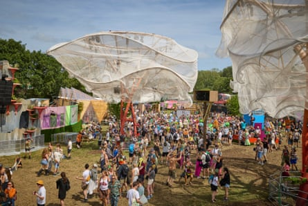
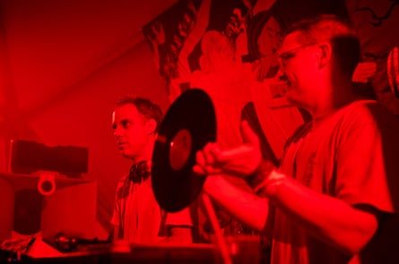
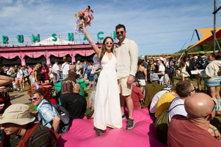
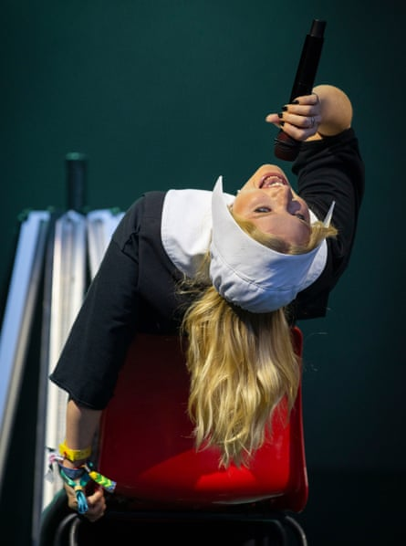

E ach year there are tweaks and adjustments to the tried and tested Glastonbury formula, and this year the eccentric Shangri-La area has had a makeover. On Thursday afternoon David Levene took a stroll around the revamped area – see more pictures here in our gallery .
The thoroughfare through the revamped Shangri-La. Photograph: David Levene
Late on Thursday night we happened upon a secret set at Floating Points’ new Sunflower Sound System in the Silver Hayes dance area – a special back-to-back performance by Four Tet (Kieran Hebden) and Floating Points (Samuel Shepherd) himself. They played a set on a painstakingly built sound system which had been assembled in a special tent with mycelium-based sound-baffling discs and tweeters hung from the top of the tent. The system has six stacks arranged around the dancefloor in a circle, enabling the selectors to pan sound around the tent.
Kieran Hebden, AKA Four Tet, plays with Samuel Shepherd AKA Floating Points, perform together at Sunflower Sound System. Photos by David Levene
Thursday evening, with no open performance stages in action, has evolved into a bit of a party night as festivalgoers ease into the proceedings. Over in Silver Hayes, crowds packed out the Lonely Hearts Club, for Nooriyah’s set around midnight.
Festivalgoers at Lonely Hearts Club for Nooriyah’s set on Thursday evening.
On Friday, the first day proper, we kicked things off with a Guardian Live talk between features writer Zoe Williams and drag queen Bimini at Astrolabe.
Drag queen Bimini during an interview with Zoe Williams at Astrolabe fora Guardian Live event. Photograph: Jonny Weeks.
Love was in the air as the festival kicked off for Guardian photographer David Levene: he snapped newlyweds Charlie and Charles in the south east corner by the Rum Shack.
Charlie and Charles Shires, from Harrogate, held theirwedding ceremonyat the festival.
In the words of our reviewer Safi Bugel: “In many ways Ca7riel and Paco Amoroso’s music is perfect for the chronically online: they rap knowingly about hashtags and OnlyFans; their hook-heavy tracks rarely push beyond the three-minute mark. But despite the in-jokes and commitment to the bit, the music is strong; they deliver a tight, confident performance for the full hour, which frequently climaxes in their frenetic percussive breakdowns. And when the music drops and the audience join in for a full-blown a capella, you know they’re bona fide popstars.”
Fans watching Ca7riel and Paco Amoroso at West Holts stage.
Ca7riel and Paco Amoroso at West Holts stage. Photographs: Jonny Weeks
Lola Young played Woodsies, and Jonny Weeks was there to capture the young British artist’s assured performance – who shot to fame with her viral track Messy, and who has had a rocky year thanks to a sometimes scabrous public.
Lola Young at Woodsies. Photograph: Jonny Weeks
Later into the evening on the big stages we saw Busta Rhymes on the Other stage, Self Esteem up at the Park stage and the 1975 closed the first day’s programme on the Pyramid stage.
Self Esteem plays the Park stage at Glastonbury.
The Guardian’s Elle Hunt was at Self Esteem: “Many in the crowd know every word – and these are very wordy songs – and really seem to get something out of shouting them to the sky. It’s stirring, serious-minded yet still upbeat.”

Busta Rhymes with Spliff Star on Other stage.
Reviewer Jason Okundaye called Busta Rhymes’s show “absolutely hilarious, and the interaction with the crowd is gold standard”.
Anohni and the Johnsons plays the Park stage.
And closing the Pyramid was the 1975: “A bold, experimental, occasionally confounding, but ultimately hugely impressive performance,” said the Guardian’s Alexis Petridis .
Matty Healy of the 1975 on the Pyramid stage at Glastonbury on Friday evening.
Matty Healy with a pint of Guinness. Photographs: Jonny Weeks